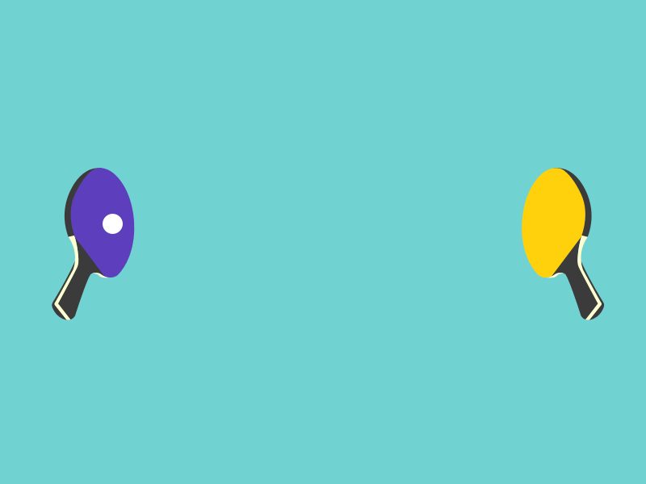

PING PONG PARTY 
INSTRUCTIONS
×
Instructions
1. Keep your laptop screen straight
2. Stand 3-4 feet away from your laptop
3. Move your right hand in ascending and descending order, a Red dot should appear on your wrist
4. Now press the play button, and again move 3-4 feet away
5. The red Paddel, is your paddel, that will move as per movement of your right wrist